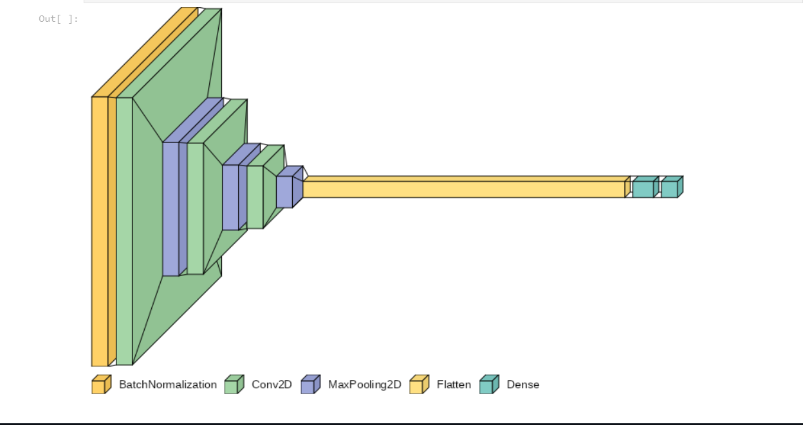

Deep learning based Pneumonia classifier
Seven Convolutional Neural Network (CNN) models

About the project:
-
Seven Convolutional Neural Network (CNN) models were evaluated.
-
The ResNet-50 demonstrated superior performance with higher accuracyand improved generalization.
-
Making it the preferred choice for futureuse in various computer vision tasks.
Here is the project GitHub link:
Deep-Learning-Pneumonia-Project
project